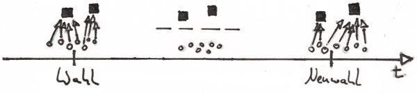
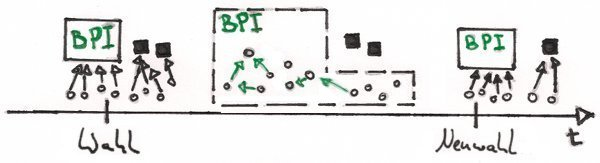

Bürger-Politik Interface Deutschland
BPID - Die Partei, die den Bürger in den Mittelpunkt stellt!
Bisher

4 Jahre lang sind die Politiker kaum mehr auf den Wähler angewiesen. Erst zur Neuwahl hin beginnt die heiße Phase des Bürgerumwerbens erneut.
Mit dem BPID

Einige Bürger wählen die Partei BPID. Die BPID hat kein eigenes Programm, sondern dient nur als Schnittstelle zwischen Bürger und Politik. Die BPID stellt dafür eine Online-Plattform zur Verfügung, auf der man diskutieren und abstimmen kann. Alle auf der Plattform getroffenen Entscheidungen werden durch (über die Plattform ernannte) Repräsentanten im Parlament eingebracht.
BPID konkret
-
Die Partei BPID tritt bei Landes- oder Bundestagswahlen an.
-
Das Herzstück des BPID bildet eine Online-Plattform, auf der Bürger Vorschläge einreichen, über Vorschläge diskutieren bzw. abstimmen und sich Repräsentanten wählen können.
-
BPID dient ausschließlich als Schnittstelle für den Bürger und hat, abgesehen von der fortlaufenden Verbesserung der Online-Plattform und der Förderung des politischen Diskurses, keine eigene Agenda.
-
Der Bürger kann über die Online-Plattform sowohl selbst abstimmten oder seine Stimme an einen anderen Bürger übertragen. Gibt ein Bürger seine Stimme an einen anderen Bürger ab, kann er dennoch abstimmen. In diesem Fall wird dem Repräsentant, in der jeweiligen Abstimmunge, die Stimme automatisch entzogen. Es ist auch jederzeit möglich dem Repräsentanten die eigene Stimme dauerhaft zu entziehen bzw. sie auf einen anderen zu übertragen.
-
Da eine geheime Online-Abstimmung nicht so stark gegen Wahlbetrug abgesichert werden kann, wie die klassische Wahl per Wahlzettel, hat der Benutzer beim BPID die Möglichkeit, geheim oder öffentlich abzustimmen. Sofern er sich für das öffentliche Abstimmen entscheidet, hat er, in Bezug auf seine und alle anderen öffentlich abgegeben Stimmen, eine zum klassischen Wahlsystem äquivalente Sicherheitslage.
-
Die dem BPID zukommenden Sitze werden an Repräsentanten verteilt, die den Auftrag haben, die über
die Online-Plattform getroffenen Entschlüsse im Parlament zu repräsentieren.
-
Da die Verpflichtung der BPID-Mittelsmänner zur Repräsentation der über die Online-Plattform gefassten Beschlüsse nicht rechtlich bindend möglich ist und nicht alle Abstimmungen öffentlich sind, wird über die Online-Plattform nicht nur bestimmt, welche Meinung repräsentiert werden soll, sondern auch wer diese Meinung repräsentiert.
Für die Förderung eines möglichst konstruktiven politischen und sachlichen Austauschs muss eine
neue Form von digitaler Plattform gestaltet werden. Klassische Strukturen wie Foren eignen sich
nicht für eine längere Auseinandersetzung mit komplexen Themenfeldern, da eine einfache
hierarchische Aufschlüsselung, wie sie in Foren häufig vorgenommen wird, nicht den notwendigen
Überblick schafft. Es muss möglich sein, Informationen und Meinungen zu evaluieren und mit
anderen Informationen und Meinungen zu verknüpfen. Die Möglichkeit für den Benutzer ein
„Netzwerk des Vertrauens“ aufzubauen, das dann zur automatischen Filterung und Gewichtung von
Beiträgen und Informationen genutzt werden kann, ist wünschenswert, wenn nicht gar notwendig,
um einen längeren, qualitativ hochwertigen Austausch zwischen Benutzern zu ermöglichen.